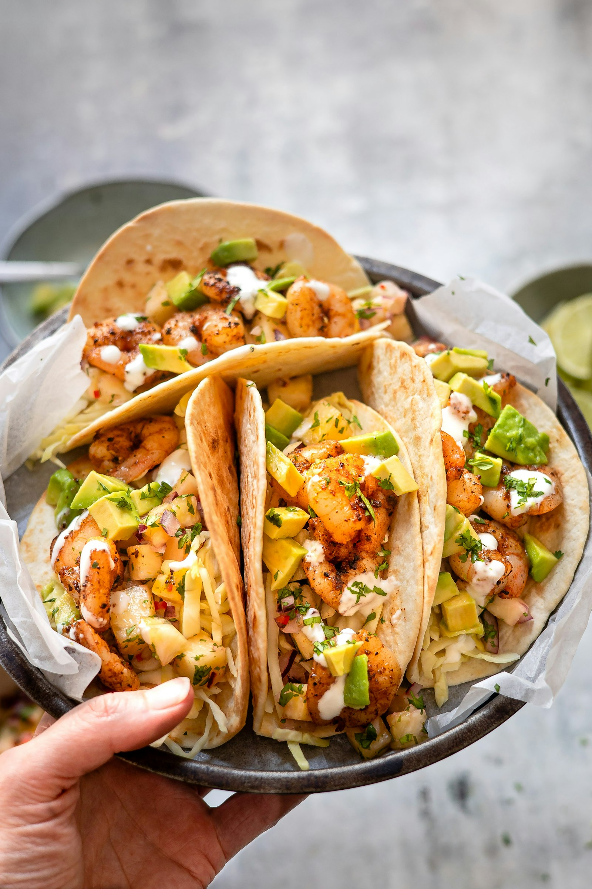

Spring taqueria
Breakfast and lunch tacos on Louetta Road.
A Mexican restaurant at 3403 Louetta Road, Suite C, in Spring. Call (281) 528-0700 or email ciscostaqueriaspring@yahoo.com.
4.7 stars from 288 Google reviews
Cisco's Taqueria is at 3403 Louetta Rd, Suite C, in Spring. Public listings and reviews mention breakfast and lunch tacos, barbacoa, quesabirria, gorditas, burritos, chilaquiles, menudo, homemade tortillas, and a family-run shop. Google lists a 4.7 rating from 288 reviews.
Google hours are 6:30 a.m.–2 p.m. Monday through Friday, 7 a.m.–2:30 p.m. Saturday, and 9 a.m.–4:30 p.m. Sunday. Other listings differ, including a Saturday opening of 6:30 a.m. and some pages that list Sunday as closed, so it is best to call ahead. No owned website was found; order.online and Uber Eats are ordering pages, not an owned domain. The restaurant uses Facebook, a public email, and a phone number.

4.7 stars from 288 Google reviews. Quotes below are from public reviews and are not testimonials created for this demo.
“The tacos we amazing! I am a little on the chubby side, and trust me I know my tacos, by far on my top 3 places to get my tacos! Thank you from ANG Credit Solutions and my staff, we enjoyed the customer service that was involved and the welcoming spirit we received getting our lunch from here. I TOTALLY RECOMMEND!”
“Great tacos! authentic Mexican! gorditas are big, tacos are well served! Deshebrada is AMAZING. Clean place, friendly staff.”
“Their tacos were amazing, I asked for my flour tortilla to be a little burnt and they toasted it up just great! The place was nice and clean, the staff is INCREDIBLE!”